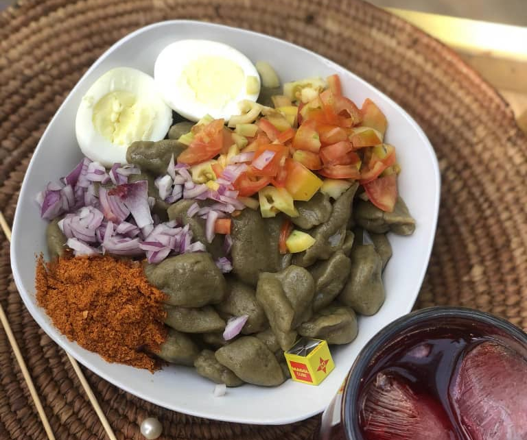

Home
Dan Wake

Description
Dan wake is a delicious meal that is indigenous to the people of Hausa, Nigeria. We can make it in less than 20 minutes if you can find already mixed flour.
Ingredients
- Flour
- Grounded beans powder (2 cups), Baobab(kuka) (3 teaspoons) and Potash (1 teaspoon).
- 1 cooking spoon fresh Moringa leaves
- Dry pepper
- Groundnut oil
- Tomatoes and Cucumber
- Carrots and cabbages
Steps:
- First, you get the Dan wake flour which is readily available now. You get the flour and mix it with a little water to make a thick paste.
- When you are done with making the paste, boil water in a pot and proceed to the next level.
- When the water starts to boil, keep forming the paste into small balls and throwing them into the boiling water.
- Allow them to boil for about 10mins(the balls will rise to the top when they are done).
- You then strain all the water and rinse with cold water once. Strain and turn it into a plate.